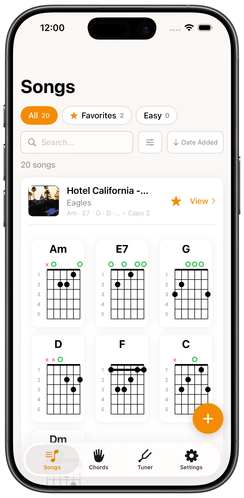
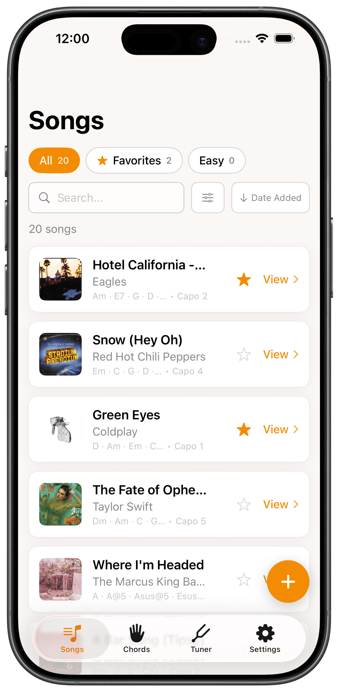
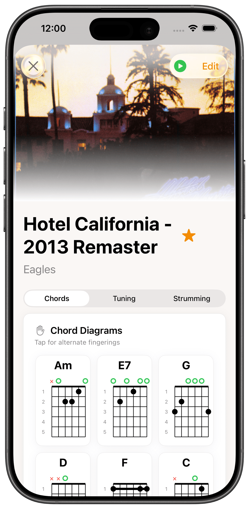
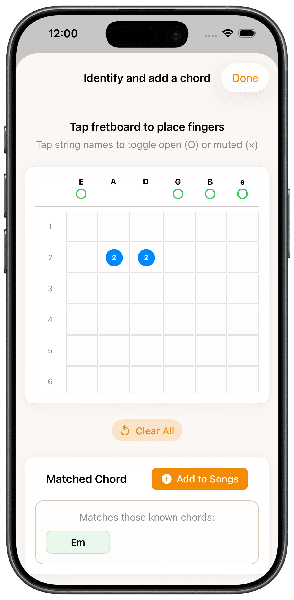
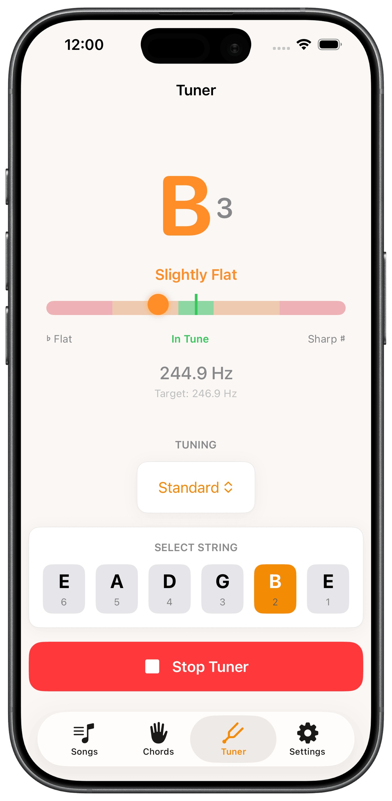
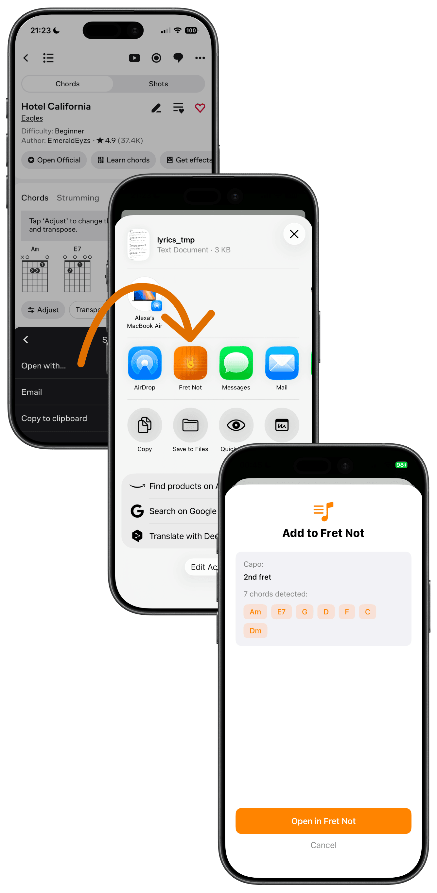
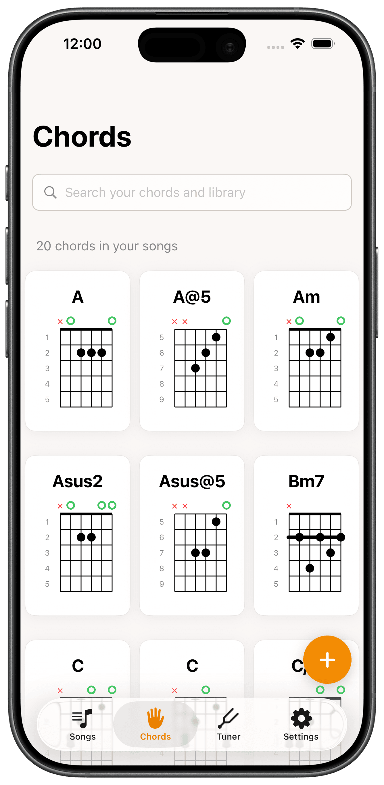

Fret Not is a free iOS app that keeps every song you're learning at your fingertips. Save each song's chords, strumming pattern, capo, and tuning, then pick up your guitar and practice in seconds.
Free on iPhone & iPad

You learned a song from YouTube last month, and now you can't remember the chords.
You're practicing a new song, it calls for a Dm, and you have to look up the shape again.
You just want all your songs in one place, so you can jump right back in and play them again.
That's exactly what Fret Not is for. It saves the chords for every song you're learning, so you can just pick up your guitar and play.
Every song you're learning is saved with its chords, strumming pattern, capo, and tuning. Sit down to practice and it's right there, ready to play.

Add the first song you're learning, then the next, and the next. Organize them however you like, and filter by chord, capo, or list. Your library, your way.
Once a song is saved, keep every detail that matters in one place: chords, tuning settings, strumming patterns, capo position, and your personal notes.


Stuck on a chord shape you can't name? Tap the fretboard to instantly identify any guitar chord, then add it directly to your song with one tap.
Before you play, tune up without leaving the app. High-precision pitch detection keeps your guitar perfectly in tune. No separate tuning app required.


Adding songs by hand gets old fast. Import songs from your Spotify library, or share a song from Ultimate Guitar to bring in chords, capo position, and lyrics automatically.
Every chord you save to a song is added to your personal chord library. Browse what you know, reference any chord in seconds, and see how far you've come.

Fret Not is a free iOS practice app for beginner guitarists. It saves every song you're learning to play, including chords, capo positions, strumming patterns, and tuning, so you can pick up your guitar and practice in seconds.
Yes. Fret Not is completely free on iPhone and iPad, with no ads and no in-app purchases. It's a side project. I'm learning to play guitar while learning to build apps, and Fret Not gets better with every release. Feedback and ideas are always welcome.
Fret Not is available for iPhone and iPad. It requires iOS 17 or later. There is no Android or web version.
Yes. Fret Not focuses on the basics every beginner actually uses: chords, capo, strumming patterns, and tuning, without tablature complexity, ads, or pro features pushing you to upgrade. If you can play your first chord, you can use Fret Not.
Fret Not isn't a lesson app, so it won't teach you to play from scratch. It's a practice companion: you learn songs wherever works for you, from YouTube to lessons to a friend, and Fret Not keeps each one's chords, strumming pattern, capo, and tuning in one place so you can practice. If you can play your first chord, you're ready.
Yes. Your song library is stored on your device, so you can browse it and play along without an internet connection. Optional iCloud sync keeps your library in sync across your iPhone and iPad.
Yes. You can import songs directly from your Spotify library into Fret Not, then add the chords, capo, strumming pattern, and other details as you learn them. You can also play the song on Spotify directly from inside the app, so you can play along while practicing.
Yes. Share any song from the Ultimate Guitar app and Fret Not imports the chords, capo position, and lyrics directly into your library.
Not yet. Automatic chord detection is a feature we're working on. For now, Fret Not suggests likely chords based on the song's key and capo position, but you'll need to know the chords yourself when adding a song manually. Alternatively, import the song from Ultimate Guitar to bring in the chords and lyrics automatically.
Yes. Fret Not includes a virtual fretboard chord identifier (tap notes to identify any chord) and a built-in high-precision guitar tuner.
I'm Alexa Kaminsky, a product designer learning to play guitar. I built the first version of Fret Not in one week using Claude Code, and launched it in December 2025.